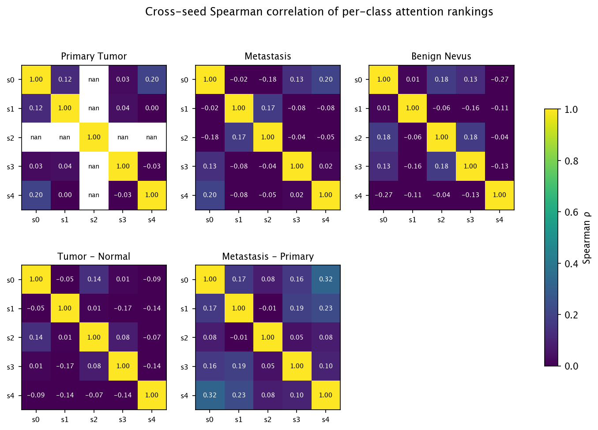
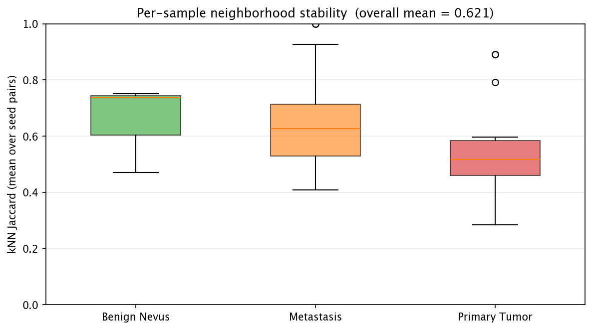
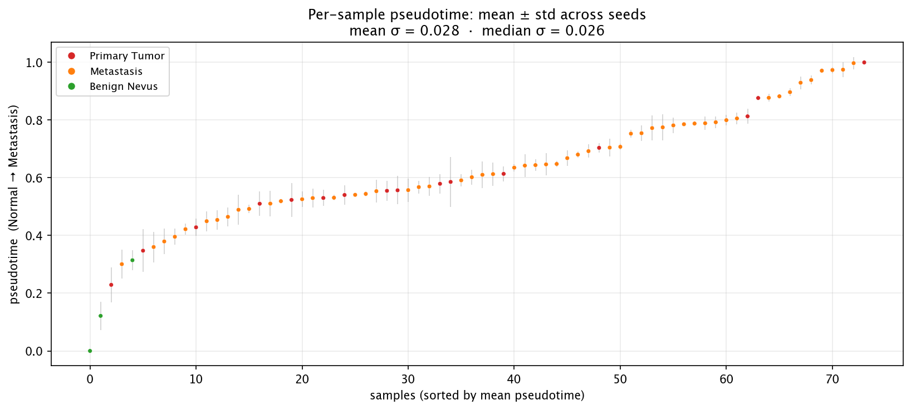

Estabilidade multi-seed — os achados são reais?
1. Variância de desempenho
Cinco seeds, arquitetura e dados idênticos, inicializações diferentes:
- Acurácia no teste: 78,38% ± 5,67% (faixa 71,62–85,14%, semilargura do IC 95% ≈ 4,97%).

2. Estabilidade do ranking de atenção
Calculamos o vetor de importância de nó por classe (1000 genes) de cada seed e perguntamos: as seeds ordenam os genes na mesma ordem?
- ρ de Spearman compara rankings completos (1,0 = ordem idêntica, 0,0 = sem relação).
- Jaccard top-50 compara quais 50 genes cada seed marcou como mais importantes (1,0 = mesmo conjunto, 0,0 = sem interseção).
| ranking | ρ de Spearman | Jaccard top-50 |
|---|---|---|
| Tumor Primário | nan ± nan | 0,327 ± 0,112 |
| Metástase | 0,008 ± 0,117 | 0,355 ± 0,043 |
| Nevo Benigno | -0,028 ± 0,143 | 0,294 ± 0,086 |
| Tumor − Normal | -0,041 ± 0,095 | 0,310 ± 0,059 |
| Metástase − Primário | 0,137 ± 0,092 | 0,377 ± 0,068 |

Rankings de diferença (ex.: Metástase − Primário) são intrinsecamente mais ruidosos que os por classe — o ruído compõe ao subtrair duas estimativas — então espere números menores aí. O arquivo
stability_consensus_top20.csv ao lado desta página lista
os 20 genes mais bem ranqueados por rank médio entre seeds, com o
desvio-padrão do rank de cada gene — essa é a lista publicável.
2. Geometria dos embeddings entre seeds
Mesmo quando duas seeds aprendem espaços 64-dimensionais ligeiramente diferentes, a questão é se o formato da nuvem é o mesmo — cada amostra cai perto dos mesmos vizinhos independentemente da seed?
- Jaccard kNN (k=10): 0,621 ± 0,154 entre pares de seeds em 74 amostras presentes na divisão de teste de todas as seeds. 1,0 = vizinhanças idênticas, 0,0 = sem interseção.
- Disparidade de Procrustes: 0,0743 (0 = idênticos a menos de rotação/escala).

3. Estabilidade do pseudotempo
Cada seed produz seu próprio eixo de pseudotempo Normal → Metástase. Alinhamos a direção entre seeds (invertendo se houver anticorrelação) e observamos quanto o pseudotempo de cada amostra varia entre as seeds. Barras de erro estreitas indicam que o modelo concorda sobre onde a amostra está no eixo de progressão; barras largas indicam amostras ambíguas.
- σ por amostra: média = 0,028, mediana = 0,026, máximo = 0,086 (em um eixo 0–1).

O que isso significa
Reprodutibilidade não é checagem extra — é a diferença entre uma anedota e um achado. Um modelo que chega aos mesmos rankings de genes, à mesma estrutura de vizinhança e à mesma posição de progressão por amostra independentemente da inicialização é um cujas conclusões podem ser citadas. Os números acima dizem, por dimensão da análise, exatamente quanto peso cada achado carrega.